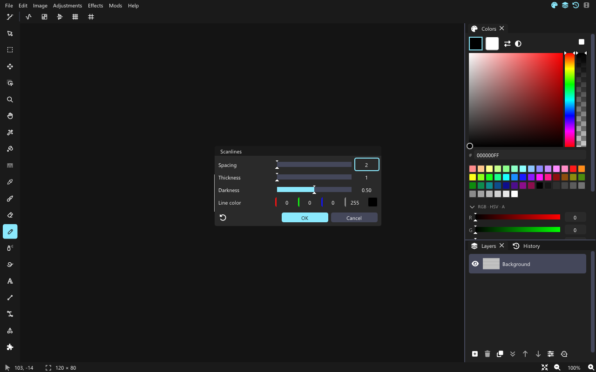

Tutorial: Scanlines (shader effect)
We'll write an effect that darkens rows like an old CRT screen, with four options: spacing, thickness, darkness and the line color. The finished mod is mods/examples/scanlines.
1. The folder
Make a folder scanlines in your mods folder with this mod.json:
{
"name": "Scanlines",
"version": "1.0.0",
"api": 1,
"kind": "shader",
"entry": "scanlines.glsl"
}2. The effect function
A shader mod defines one function, vec4 effect(vec2 pos). David calls it for every pixel of the selection (or the whole layer). pos is the pixel's position in the image, and pixel(pos) reads the image there. Colors are straight RGBA from 0 to 1.
vec4 effect(vec2 pos) {
return pixel(pos);
}That effect does nothing yet. Save it as scanlines.glsl, turn the mod on in Settings > Mods, and it shows up under Effects > Mods.
3. Name and options
Comment lines that start with // @ describe the effect. Each @param becomes a uniform of the same name and a control in the dialog:
// @name Scanlines
// @id scanlines
// @category Effects/Stylize
// @param spacing int 2..16 = 2 "Spacing"
// @param thickness int 1..8 = 1 "Thickness"
// @param darkness float 0..1 = 0.5 "Darkness"
// @param tint color = #000000FF "Line color"| Type | Line | Uniform |
|---|---|---|
| float | // @param id float min..max = default "Label" | float |
| int | // @param id int min..max = default "Label" | int |
| bool | // @param id bool = true "Label" | bool |
| choice | // @param id choice One|Two|Three = 0 "Label" | int (the index) |
| color | // @param id color = #RRGGBBAA "Label" | vec4 |
@id is the name the CLI uses (--effect scanlines:spacing=4); without it the folder name is used. @category places it in the menus: Effects/Stylize is Effects > Stylize, Adjustments is the Adjustments menu. The window behind the dialog stays undimmed so the live preview can be judged; add // @dim to darken it like other dialogs.
4. The lines
vec4 effect(vec2 pos) {
vec4 c = pixel(pos);
bool line = mod(pos.y, float(spacing)) < float(thickness);
if(line) c.rgb = mix(c.rgb, tint.rgb, darkness * tint.a);
return c;
}Save. The mod reloads, and Effects > Stylize > Scanlines opens the dialog with a live preview. OK makes it one undo step; Ctrl+F repeats it.

What else
- The uniforms
uSize(the area's size) anduOrigin(its top-left in the image) are there if you need them. pixel()clamps at the edge of the area. The area is the selection's bounding box.- A GLSL error shows in Settings > Mods with its line number, counted from the top of your file.
- The CLI runs shader mods too; it opens a hidden window for the GPU.